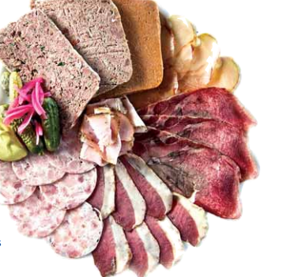
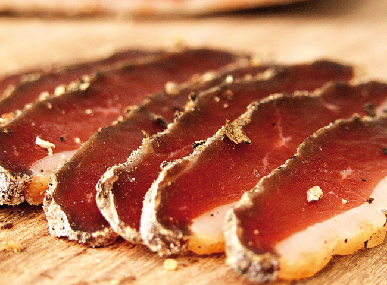
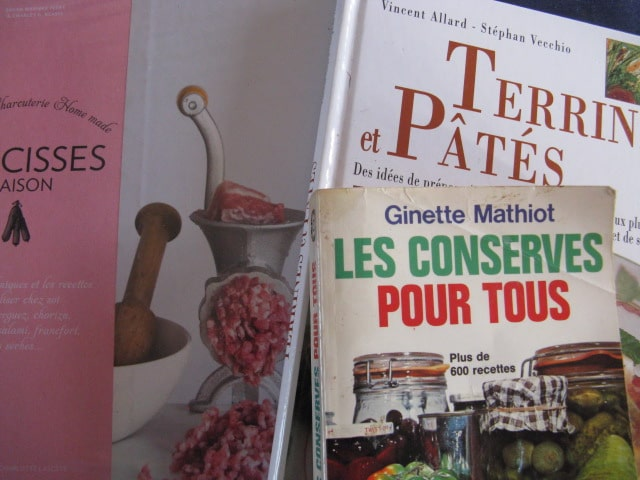
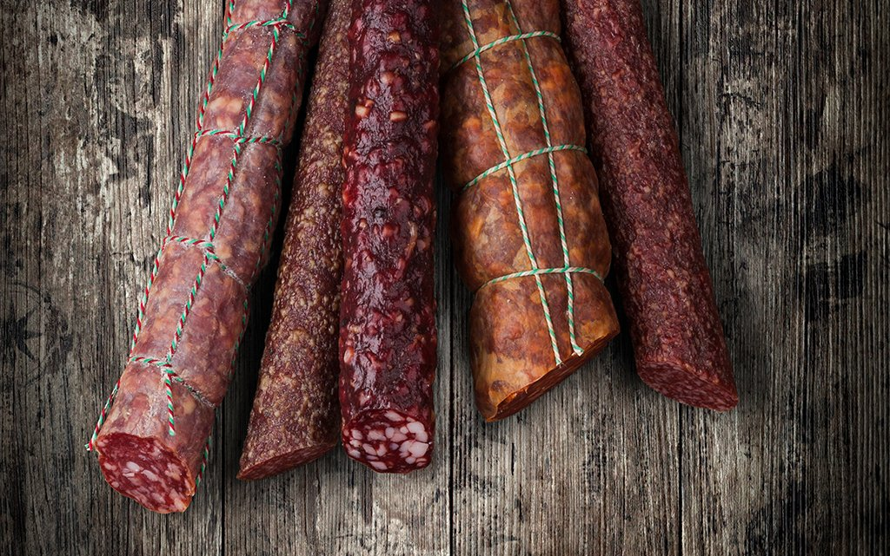

Petite histoire de la charcuterie
Voir
Complete Guide To Sausage Making
Voir
The Art of Making Fermented Sausages
Voir

Faire ses charcuteries maison : conseils et recettes
Voir

7 livres pour apprendre à faire sa charcuterie maison
Voir

100% charcuterie maison : saucissons, corned beef, porchetta
VoirVideo: Sausisson, gare aux cochoneries
Tout ce qu'on ne vous dit pas sur le saucisson et les raisons pour faire la charcuterie chez-vous.